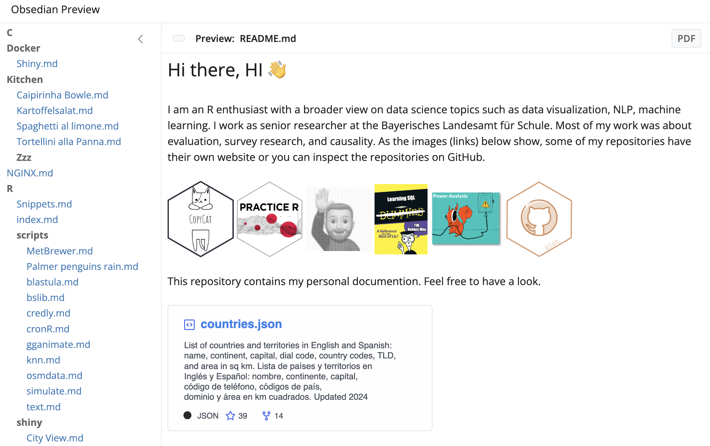

The goal of robsidian is to implement a simple interface to Obsidian’s API. This package is still in development and not yet on CRAN.
Installation
You can install the development version of robsidian from GitHub with:
# install.packages("pak")
pak::pak("edgar-treischl/robsidian")Example
In order to use the package, you need to set the environment variable robsidian_dir to the path of your Obsidian vault. This can be done with the following code:
library(robsidian)
Sys.setenv(robsidian_dir = "~/Documents/GitHub/documentation")
Sys.getenv("robsidian_dir")
#> [1] "~/Documents/GitHub/documentation"The package provide the Obsidian preview app as R Studio addin. You can use it to preview the current R Markdown document in Obsidian.

The addin runs:
robsidian::obsidian_addin()